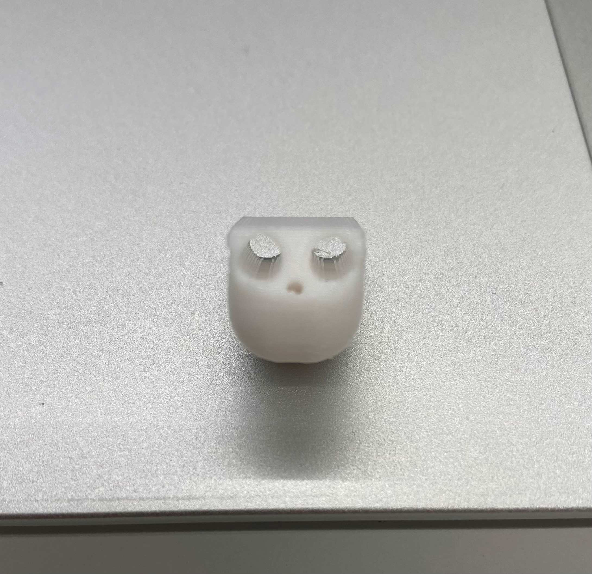

Project Note
アイデアスケッチ
概要

プロセス
5/29
役割分担と手の部分担当の人が試作
6/5

試作した手は形はしっかりしています。動かすためにワイヤーを通す必要があるのですが、
それを通す穴が本来とれるはずのもので塞がって開通の使用がない状態でした。

写真のようにサポートが本体と繋がっている状態です。
まずは開通させることが課題のようです。
6/12

サポートそのものを無くし、性能が前回より良い3Dプリンターを使うと写真のように綺麗に開通しました。

指に黒いゴム紐を通して指を固定してかつ閉じた状態から元に戻るようにしました。
さらにモーターが引っ張るためのテグスを通してみました。
手で試しに引っ張てみると結構な力が必要でテグスが切れる可能性が出てきました。
手の平のへこんでいる部分によって紐がかなり湾曲しているのも力が必要な原因の一つです。
使ったもの
紹介動画